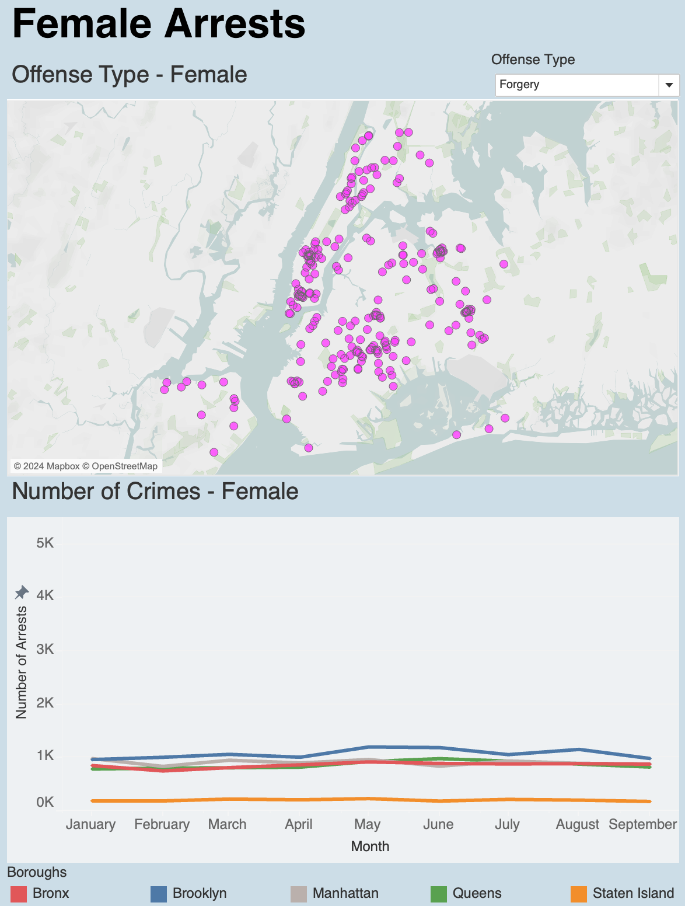
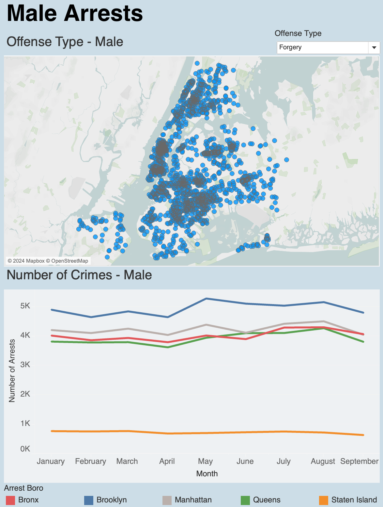

NYC Crime Visualization in Tableau
Using New York City Arrest Data published by the NYPD, I developed an interactive Tableau dashboard that visualizes
offense type by gender. Users can select specific offense types to view a geographic representation of arrests on a map.
The map below highlights the locations of forgery crime arrests for females.
The line graph illustrates the total number of female arrests per month, broken down by borough.

The map below highlights the locations of forgery crime arrests for males.
The line graph illustrates the total number of male arrests per month, broken down by borough.
